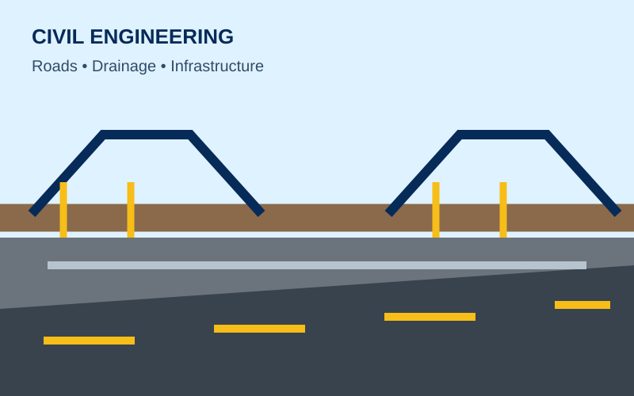
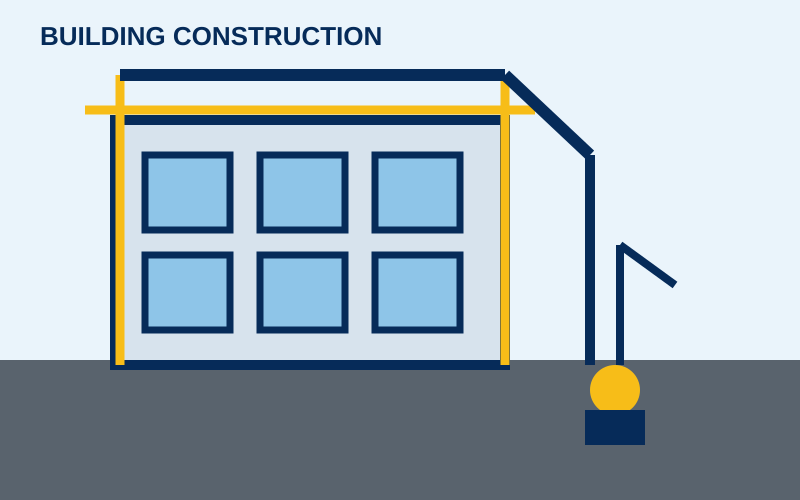

Building Construction
Construction and finishing solutions for residential and commercial buildings.
- Residential buildings
- Commercial buildings
- Renovation & rehabilitation
- Foundation & structural works
- Roofing & finishing
WELCOME TO TW&D
Professional building construction, civil engineering, electrical engineering, plumbing and engineering consultancy services for residential, commercial and infrastructure projects.
OUR SERVICES
Practical engineering and construction solutions delivered with professionalism, safety and attention to detail.
Construction and finishing solutions for residential and commercial buildings.

Roads, drainage, concrete works, earthworks, site development and infrastructure projects.
Electrical systems for domestic, commercial and project environments.
Reliable water supply, drainage and plumbing installation services.
Technical support and professional project guidance from planning through delivery.

ABOUT US
TW&D Engineering Consult & Services Ltd is an engineering and construction company based in Ibadan, Oyo State, Nigeria. We provide practical solutions across building construction, civil engineering, electrical engineering, plumbing and engineering consultancy.
Our approach is built around careful planning, quality workmanship, site coordination, safety and clear communication with clients from project concept to completion.
OUR PROJECTS
From buildings and roads to building services and consultancy, our capabilities cover multiple project needs.
GALLERY
Project-focused engineering illustrations showing the type of work TW&D delivers.
START YOUR PROJECT
Call TW&D Engineering Consult & Services Ltd for a consultation and quotation.
GET IN TOUCH
Tell us about your building, civil, electrical, plumbing or engineering consultancy requirement.
Use WhatsApp to send your project details directly to TW&D.
Send Project Enquiry →Tip: Include your project location, type of work, approximate size and any drawings/photos you have.